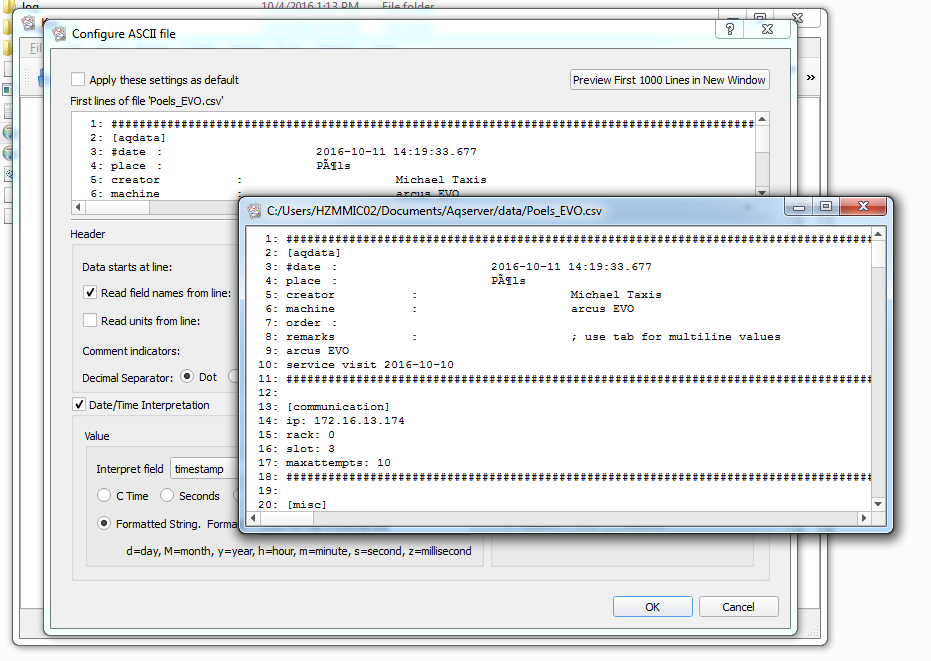
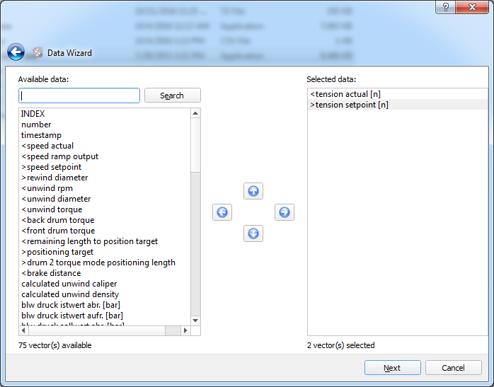
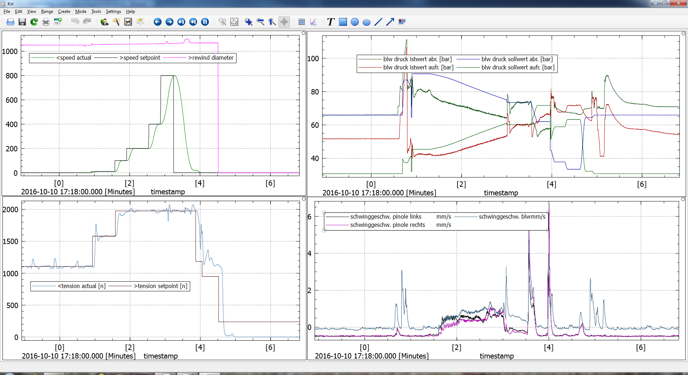

Introduction to Kst2
Kst2 is an open source graph and plot creator and visualizer. The program can be downloaded from from https://kst-plot.kde.org . Most recent Windows version is 2.08. On the homepage of the program some tutorial videos are provided. Maybe take a look at these before starting to use Aqserver and Kst2.
Usage

The easiest way to use Kst2 as an online chart visualizer together with Aqserver is to start with the data wizard.
Note
You can start the data wizard several times, also with the same file, when you want to add more graphs to your display. Also if you run multiple instances of Aqserver you can pick a different datafile.
Start it by clicking the following icon:


The data wizard window will popup where you must select the active data file (this will be in your sub directory data ). Browse to the file to select it and then click the configure button.

The “configure ASCII file” window will popup. Here you must configure the properties of your data file. Values you must adjust include:
- Data starts at line: scroll down the window showing your datafile until you reach the first recorded values. Note the number and put into the required field. If the first data line is not shown, try the button “Preview first 1000 lines in new window”.
- Obviously the “Read field names from:” option must activated and the acording line number must be entered (see above value - 1)
- set the decimal separator
- set the Custom delimiter to the one you have used in the datafile
- activate “Date/Time Interpretation”
- scroll down the “Interpret field as” and pick the value timestamp. (If no selection is shown, exit with “Ok” and enter configuration again, then try to pick timestamp).
- activate “formatted string” and set the format to “yyyy-MM-dd hh:mm:ss.zzz”. Then our timestamp will be interpreted correctly.
Leave the window with ok. Set the update type to either time interval or you can try change detection. When using an already recorded archive you can use no update. Then click “Next” in the Data Wizard window.
{kind=link}
Data wizard with “Preview first 1000 lines in new window”.

Pick the values you want to be shown in a graph and move them to the right window with the arow buttons. Click next
{kind=link}
Same with some values selected.

Experiment a little bit with data range settings. Activate “Create XY-plots”. For X-axis vector we select our field “timestamp”. Click next.

Then we setup the appearance of the graphs, either in one plot or 1 plot per curve.
{kind=link}
Finally we will be shown our recorded values. If you have picked an updating file, the curves will also update.
Note
When a trigger has been raised that starts a new datafile use the green round arrow key to reload your datafile. Otherwise Kst2 will not update with the new file.
For further information about Kst2 try their documentation, forums etc.